06 · 个人项目 / 独立完成
基于 KuaiRand 的长序列 CTR、曝光去偏与多任务时长
三条线同等重要：长序列侧从 SASRec / DIN 做到 SIM 双通道与 OneTrans 等统一架构；去偏侧用 RPD / PA-GSU / Bias-Gate 证明检索层去偏优于纯 IPS；多任务侧系统对比工业时长目标 CREAD / WLL-Norm / Distill-EMD 与 Shared / MMoE / PLE。全程用 KuaiRand 真随机曝光统一报告 test_std / test_rand / gap，时长侧再加 GAUC / XAUC / MAE。
- 双通道 test_rand
- 0.721
- gate_q50 |gap|
- −0.036
- MTL XAUC（CREAD）
- 0.624
- MTL MAE（WLL-Norm）
- 5.4s
项目背景｜超长行为用不完，有偏 AUC 又会虚高
工业 CTR 面临两件同时成立的事：用户行为序列可到万级，对全历史做 attention 算力不可承受；推荐日志本身又带曝光偏置，模型在有偏曝光上拟合得越好，标准流量 AUC 越高，但在随机干预流量上可能更差——只看有偏 AUC 会系统性虚高。
KuaiRand 提供真随机曝光标记 is_rand，因此本项目把评测口径固定为三件套：
| 指标 | 含义 |
|---|---|
test_std | 标准推荐曝光（有偏） |
test_rand | is_rand=1 随机干预曝光（更接近无偏） |
gap = test_rand − test_std | 越好 = |gap| 越小（越接近 0） |
形式化写作：
$$ \mathrm{gap}=\mathrm{AUC}_{rand}-\mathrm{AUC}_{std},\qquad \mathrm{稳健性目标}=\min\big|\mathrm{gap}\big| $$
并划分两条赛道：Pure（约 2.7 万用户，短序列为主，做因果与损失去偏协议）与 1K（1000 用户、百万 item、长历史，做检索与 scaling）。两条赛道绝对值不横比，比较数字必须注明 epoch。倾向估计使用无泄漏的 cal_rand 切分：从随机曝光里单独切校准集，与 holdout 不相交，不进训练、不用点击标签。
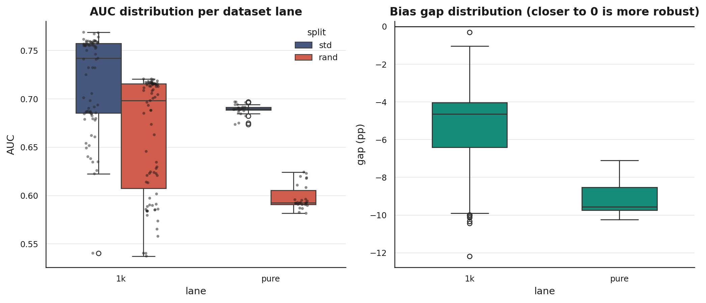
项目目标｜长序列利用率、无偏稳健性与时长联合优化并重
目标不是单刷有偏 AUC，而是在同一裁判下同时回答三个问题：如何把超长历史真正用起来，如何避免「更强匹配更贴热门」，以及如何在点击之外把观看时长学准。三条线互相支撑：长序列负责能力上限，去偏负责无偏站得住，时长 MTL 负责优化目标不止「点不点」还有「看多久」。
技术路径｜长序列阶梯 + Debias-in-Retrieval + CTR/时长 MTL
一、长序列建模阶梯：从 SASRec 到 HyFormer
按「能力递进 + 每步都问 gap」的方式逐级搭建，共 12 类骨干。下表是完整阶梯与代表数字（1K 与 Pure 分别标注，勿横比）：
| 阶段 | 模型 | 赛道 · ep | val | test_std | test_rand | gap | 这一步学到什么 |
|---|---|---|---|---|---|---|---|
| ① | SASRec（因果自注意力） | Pure · 10 | 0.631 | 0.626 | 0.540 | ≈0 | 短截断 50 容量不足，作全项目 floor |
| ② | DIN（target-aware LAU） | Pure · 10 | 0.709 | 0.678 | 0.574 | −0.104 | std 大涨但 rand 掉更多 → 暴露曝光偏置 |
| ③ | DIN + 侧特征（item 融合） | Pure · 10 | 0.714 | 0.685 | 0.585 | −0.100 | tag/author 内容特征稳定增益 |
| ③ | DIN + 侧特征 | 1K · 3 | 0.728 | 0.732 | 0.688 | −0.044 | 1K 行为稠密，长历史场景天然更强 |
| ④ | DIEN（GRU 演化 + aux loss） | Pure · 10 | 0.581 | 0.540 | 0.537 | −0.003 | 负结果：弱于 DIN，本数据跳过演化线 |
| ⑤ | SIM 硬 GSU（tag+author） | 1K · 3 | 0.742 | 0.741 | 0.701 | −0.041 | 长窗检索有效；tag 比 author 更关键 |
| ⑥ | SIM 双通道 recent⊕semantic | 1K · 3 | 0.754 | 0.755 | 0.721 | −0.034 | 能力锚点：近因保底 + 检索补长尾 |
| ⑦ | Soft GSU 双通道（余弦检索） | 1K · 1 | 0.758 | 0.759 | 0.718 | −0.041 | 软检索抬 std 却伤 gap → 相关 ≠ 无偏 |
| ⑧ | TWIN CP-GSU（dot ESU） | 1K · 1 | 0.730 | 0.732 | 0.688 | −0.044 | 检索与打分一致性有价值 |
| ⑧ | TWIN（mlp ESU，不一致） | 1K · 1 | 0.725 | 0.725 | 0.674 | −0.051 | 换头破坏一致性 → 明显更差 |
| ⑨ | OneTrans-L（统一 tokenizer） | 1K · 1 | 0.766 | 0.769 | 0.718 | −0.050 | 最高 std 档，但更贴有偏分布 |
| ⑩ | RankMixer-L（token-mix） | 1K · 1 | 0.757 | 0.760 | 0.717 | −0.043 | depth 有收益，gap 好于 OneTrans |
| ⑪ | HyFormer-L（query 压缩） | 1K · 1 | 0.757 | 0.760 | 0.713 | −0.047 | 历史压缩折中方案 |
| ⑫ | SIGKDD DIN 特征增强 | 1K · 3 | 0.747 | 0.750 | 0.697 | −0.054 | 特征 + 多 loss 抬 val，gap 不如结构型 |
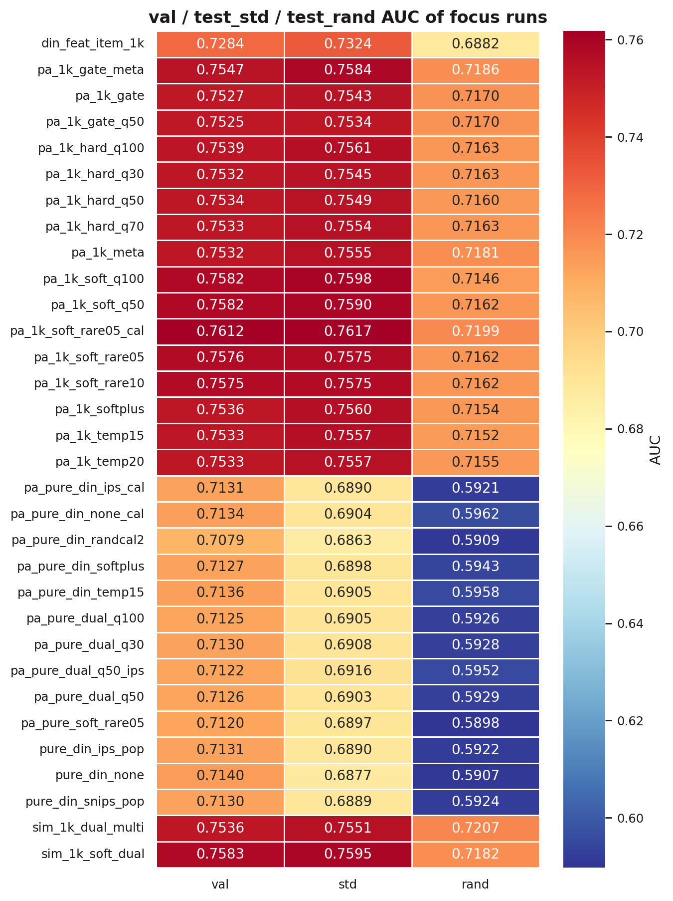
① → ② 从序列编码器到 target-aware
SASRec 用因果自注意力取最后位置作用户向量做 next-item，与 target 无关；DIN 改成用候选 item 对历史做 Local Activation Unit 注意力池化，再四路拼接进 MLP：
$$ \alpha_i=\frac{\exp\big(a(e_i,e_t)\big)}{\sum_j \exp\big(a(e_j,e_t)\big)},\qquad interest=\sum_i \alpha_i e_i $$
$$ x=[\,interest,\ target,\ interest-target,\ interest\times target\,] $$
差分与乘积项显式提供「兴趣与候选的距离/交互」，是 DIN 相对纯池化的关键。代价是要对全历史算 attention，序列到几千上万就不可行——这直接引出 SIM。
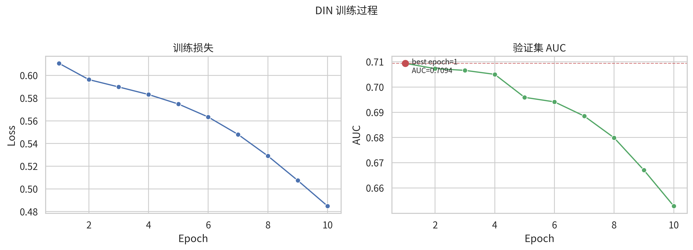
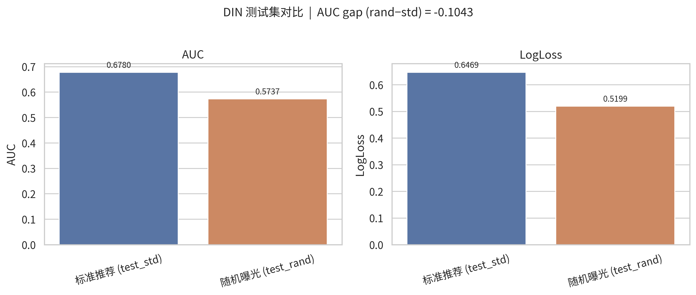
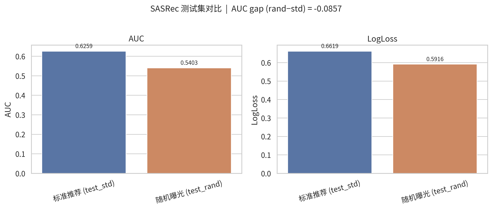
③ 特征工程：侧特征怎么进网络
侧特征分两种接法，做了完整对照：
feat_mode=item（主力）：tag / author / 时长等视频侧特征先 融入 history 与 target 的 item 表示（fuse_item），让注意力在「带内容语义的 item」上打分；用户画像走side直接拼进 MLP。feat_mode=mlp（对照）：ID embedding 不变，侧特征全部走side拼进 MLP，不参与注意力。- 相对时间间隔 embedding：history 每个位置的 key 上加
time_proj(RelativeTimeEncoder(Δt))再做 LAU 池化，让「多久之前发生」进入注意力权重。
加了侧特征后输入变为：
$$ x=[\,interest,\ target,\ interest-target,\ interest\times target,\ side\,] $$
防穿越取舍：刻意不使用 video_features_statistic 这类统计表。它含 item 曝光/播放统计，既会造成时间穿越，也会把流行度直接泄露进特征——而流行度正是本项目要去偏的对象。宁可少一批强特征，也不让评测失真。
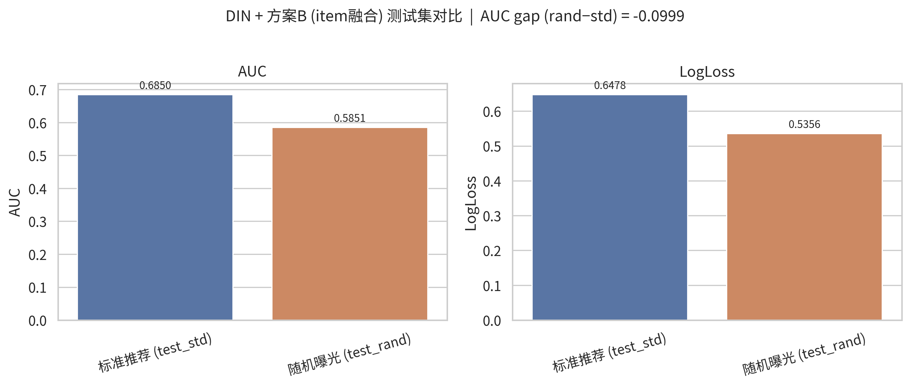
④ DIEN：一个被数据否掉的方向
在 DIN 注意力之前加 GRU 兴趣演化层，并用辅助损失让每步隐状态 \(h_t\) 去预测下一个行为：
$$ interest=\mathrm{AUGRU}\big(\mathrm{GRU}(history),\ target\_attn\big) $$
结果 val 仅 0.581，明显弱于 DIN。原因是本数据点击标签噪声大、序列偏短，aux loss 反而让模型过拟合演化路径。据此明确跳过演化线，主线锁定 DIN 族——保留这个负结果比硬凑一条「DIEN 也做了」更有说服力。
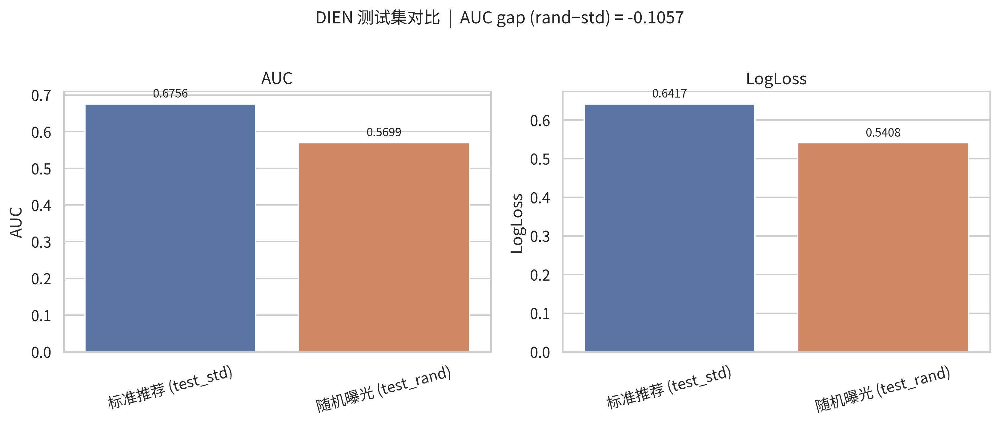
⑤ → ⑥ SIM 两阶段与双通道结构创新
GSU 先从最长 \(L=10000\) 条历史中检索 top-\(K=50\)，ESU 只对子序列做 DIN 精算，复杂度从 \(O(L)\) 降到「检索 + \(O(K)\)」。硬 GSU 按 tag/author 匹配；软 GSU 用特征余弦在长窗内打分：
$$ \mathrm{rel}(i,t)=\frac{\mathbf{e}_i^\top\mathbf{e}_t}{\|\mathbf{e}_i\|\,\|\mathbf{e}_t\|},\qquad \mathcal{H}_{\mathrm{ret}}=\mathrm{TopK}_{i\in\mathcal{H}}\big(\mathrm{rel}(i,t)\big) $$
单路检索的问题是「非近即远」：只看 recent 会丢长尾兴趣，只看 semantic 可能丢近因或引入噪声。因此提出双通道——两路兴趣并行，检索只追加不替换近因：
$$ interest_{rec}=\mathrm{Attn}(\mathcal{H}_{recent},t),\qquad interest_{ret}=\mathrm{Attn}(\mathcal{H}_{ret},t) $$
$$ x=[\,interest_{ret},\ interest_{rec},\ target,\ interest_{ret}\times target,\ interest_{rec}\times target,\ side\,] $$
这是 1K 上 gap 最优的一类（−0.034）。有意思的是硬匹配 + 多标签 tag 比软余弦检索更保守也更无偏：软检索召回更全、排序更激进，对热门更友好，于是 std 高 1pt 但 gap 差 0.7pp。
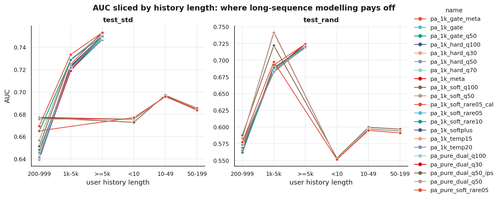
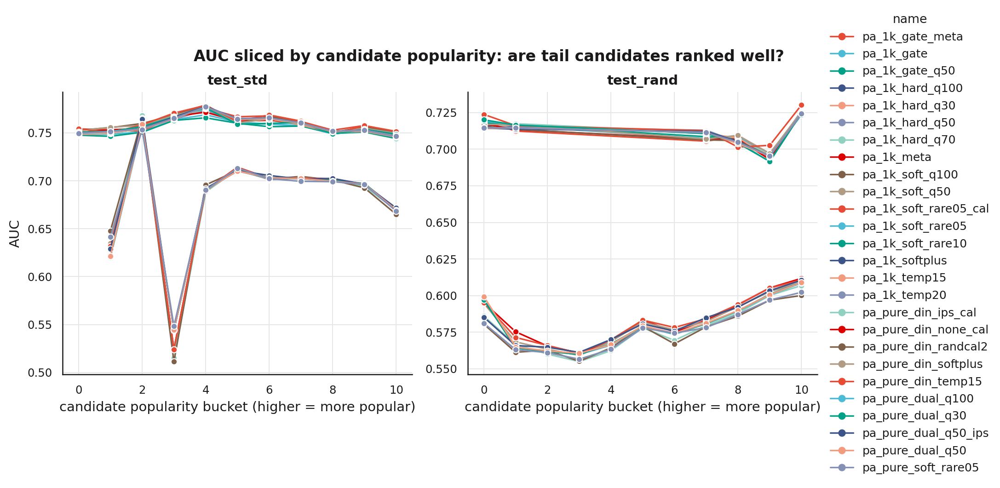
⑧ TWIN：把一致性当成目的
两阶段的隐患是 GSU 与 ESU 的「相关」不是同一套标准：按 author 硬筛出来的一批，ESU 的注意力可能更看 tag 与时效，等于筛错了。TWIN 要求检索打分与聚合打分共用同一函数 \(s(\cdot)\)：
$$ \mathcal{H}_{ret}=\mathrm{TopK}_{i\in\mathcal{H}}\big(s(e_i,e_t)\big),\qquad interest=\sum_{i\in\mathcal{H}_{ret}}\alpha_i\,e_i,\quad \alpha_i\propto\exp\big(s(e_i,e_t)\big) $$
消融很直接：\(s=\mathrm{dot}\) 时 gap −0.044；换成 \(s=\mathrm{mlp}\)（检索与聚合不一致）掉到 −0.051。一致性本身就是收益，不是「换个更强检索」。
⑨⑩⑪ 统一架构与 scaling 对照
前面所有方案都是「先序列、后交叉」，只在打分层融合。三类统一架构把这层隔离打掉：
- OneTrans：历史逐条成 S-token，用户画像与候选切成多个 NS-token，拼成因果序列 $$ \mathbf{Z}=[S_1,\ldots,S_L,\,NS_1,\ldots,NS_{n_s}] $$ 末尾 NS 可 attend 全部历史。对 S-token 与各 NS-token 用 Mixed 参数化（行为同质、画像/候选异质），取全部 NS 输出拼接打分： $$ \hat y=\mathrm{MLP}\big([\,h_{NS_1},\ldots,h_{NS_{n_s}}\,]\big) $$
- RankMixer Lite：把序列压成 \(N=8\) 个 token，每层做多头 token-mixing + 每 token 独立 FFN。
- HyFormer Lite：用 \(Q\) 个可学习 query 把长历史压成 summary token，再与候选侧做 cross-attention： $$ \mathbf{C}=\mathrm{softmax}\!\left(\frac{Q K_{hist}^\top}{\sqrt{d}}\right)V_{hist},\qquad h=\mathrm{CrossAttn}(\mathbf{C},\,e_t) $$
结论有点反直觉但很重要：OneTrans-L 把 val / std 拉到全项目最高（std 0.769），gap 却更差（−0.050）——参数量与全局交互让它更贴标准曝光分布。RankMixer 的 token-mix 结构偏置对 rand 更友好（gap −0.043）。scaling 抬得动能力上限，抬不动无偏稳健性。
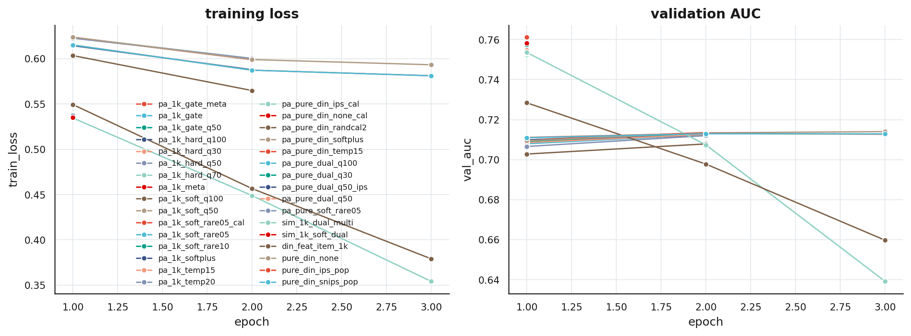
⑫ SIGKDD 特征增强线：特征与损失怎么堆
这条线专门验证「特征派」能走多远。在 DIN 上叠加多路特征与多个损失项，输入扩展为七路：
$$ x=[\,interest_{attn},\ target,\ interest_{attn}-target,\ interest_{attn}\times target,\ interest_{mean},\ side,\ sigkdd\_dense\,] $$
并在主 logit 上挂一条门控长尾残差支路，让模型只在需要时做长尾修正：
$$ logit=logit_{base}+\alpha\cdot\sigma\big(gate(h,\ interest_{attn},\ meta)\big)\cdot tail\_residual(\cdot) $$
特征侧：dense 统计特征做 EMA 平滑（避免单批统计抖动）、match 特征（历史与候选的匹配度显式化）、interest_mean 与注意力兴趣并存（池化方式互补）：
$$ f_t=\beta f_{t-1}+(1-\beta)x_t,\qquad interest_{mean}=\frac{1}{|\mathcal{H}|}\sum_{i\in\mathcal{H}}e_i $$
损失侧四项叠加。记点击标签 \(y\in\{0,1\}\)、预测概率 \(\hat y=\sigma(logit)\)，软标签 \(y^\varepsilon=y(1-\varepsilon)+\varepsilon/2\)（\(\varepsilon\approx 0.003\)）：
$$ \begin{aligned} \mathcal{L}_{\mathrm{BCE}} &= -\big[y^\varepsilon\log\hat y+(1-y^\varepsilon)\log(1-\hat y)\big] \quad\text{（Label smoothing，}\varepsilon\approx 0.003\text{）} \\[4pt] \mathcal{L}_{\mathrm{rank}} &= \log\big(1+\exp(-(s_+-s_-))\big) \quad\text{（Pairwise rank loss）} \\[4pt] \mathcal{L}_{\mathrm{tail}} &= \mathbb{E}\big[\|\Delta_{\mathrm{tail}}\|_2^2\cdot\mathbf{1}_{\{\hat y>\tau\}}\big] \quad\text{（Tail aux loss）} \\[4pt] \mathcal{L} &= \mathcal{L}_{\mathrm{BCE}}+\lambda_r\mathcal{L}_{\mathrm{rank}}+\lambda_t\mathcal{L}_{\mathrm{tail}} \end{aligned} $$
结果：val 0.747 / std 0.750 / rand 0.697 / gap −0.054。特征工程 + 多损失确实能抬 val，但 gap 不如结构型的双通道。这条线在简历里的定位是「我有完整特征与损失工程能力，并且知道它在这个问题上的边界」，不是无偏最优路线。
ESU 注意力还可加温度 \(\tau\) 或 Softplus 归一化（收益边际）：
$$ \alpha_i=\frac{\exp(a_i/\tau)}{\sum_j\exp(a_j/\tau)} \quad\text{或}\quad \alpha_i=\frac{\mathrm{softplus}(a_i)}{\sum_j\mathrm{softplus}(a_j)} $$
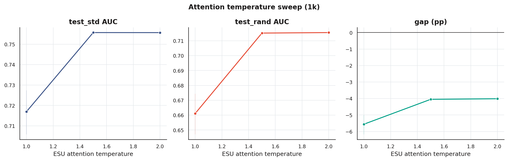
二、曝光去偏：Debias-in-Retrieval
先做损失层对照。记倾向 \(\hat p_i=\widehat{\Pr}(\mathrm{expose}=1\mid i)\)，经典重加权写为：
$$ \mathcal{L}_{\mathrm{IPS}}=\mathbb{E}\!\left[\frac{1}{\hat p_i}\,\ell(y,\hat y)\right],\qquad \mathcal{L}_{\mathrm{SNIPS}}=\frac{\mathbb{E}\!\left[\hat p_i^{-1}\ell(y,\hat y)\right]}{\mathbb{E}\!\left[\hat p_i^{-1}\right]} $$
Pure 上 DIN 加 IPS / SNIPS / RandCal，gap 全部落在 −0.096 ～ −0.097，几乎拉不开；换到 1K 的强双通道骨干上再加 IPS，rand 从 0.721 掉到 0.716，反而略伤。另外旧 MTL（click + long_view 共享塔双头）也没改善 gap。
机制解释：损失层只缩放梯度，模型看到的还是同一批偏热门的历史证据，强骨干能通过表征把权重「学回来」。而 GSU 的 top-k 是离散选择——改了候选集，下游无法学回来。据此提出命题：曝光偏置的主要放大器是长序列检索的 GSU 选择阶段，而不是损失函数。
诊断创新：RPD
按训练期曝光计数把 item 分成 10 个流行度桶 \(b\in\{1,\ldots,10\}\)，比较三个分布：检索出的子序列 \(P_{ret}\)、窗口内全部历史 \(P_{win}\)、随机曝光池 \(P_{rand}\)。KL 展开为：
$$ \mathrm{KL}(P\|Q)=\sum_{b=1}^{10} P(b)\log\frac{P(b)}{Q(b)+\varepsilon} $$
$$ \mathrm{RPD}_{win}=\mathrm{KL}\big(P_{ret}\,\|\,P_{win}\big),\qquad \mathrm{RPD}_{rand}=\mathrm{KL}\big(P_{ret}\,\|\,P_{rand}\big),\qquad \mathrm{head\_share}=\sum_{b\in\mathrm{Head}}P(b) $$
1K 上的关键发现：窗口本身就偏热（head_share 约 0.65，随机曝光约 0.50）；常规硬/软检索的 \(\mathrm{RPD}_{win}\approx 0\) 但 \(\mathrm{RPD}_{rand}\) 仍很大——检索并没有额外作恶，它只是忠实地跟着已经偏热的窗口走。这个量不需要训练就能算，成本近乎为零。
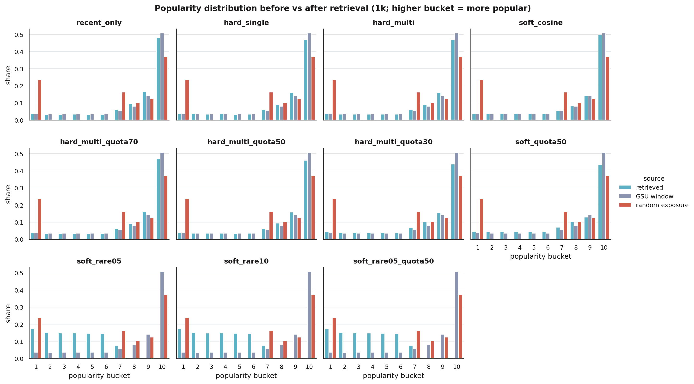
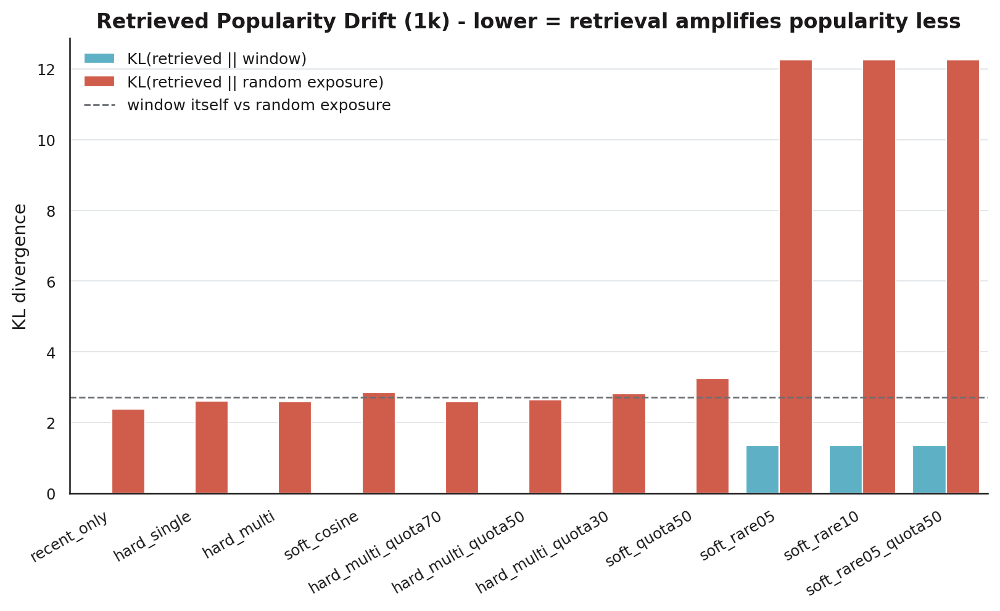
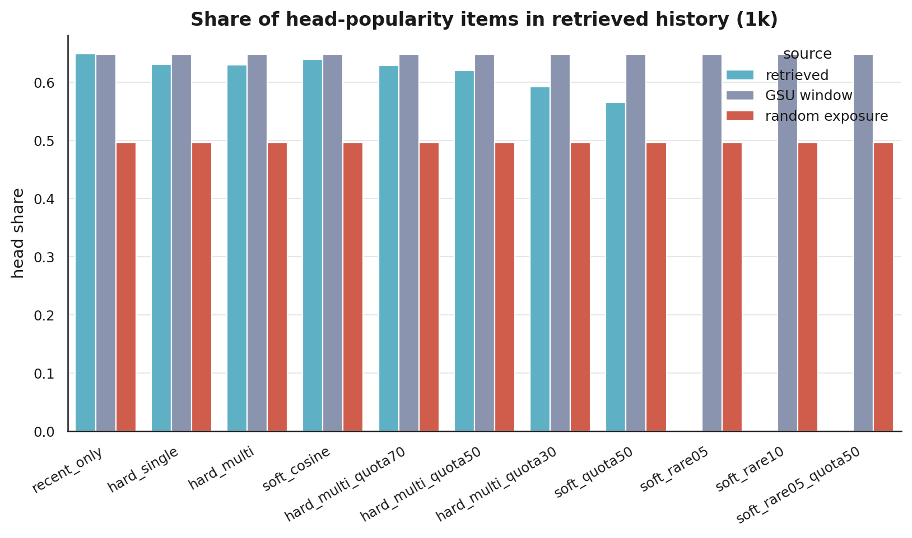
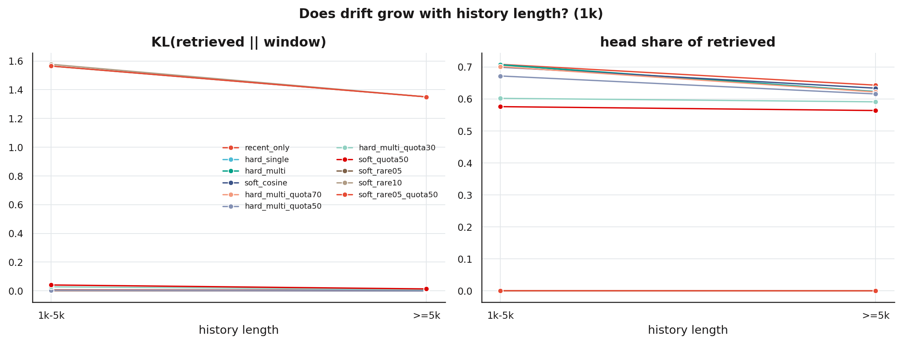
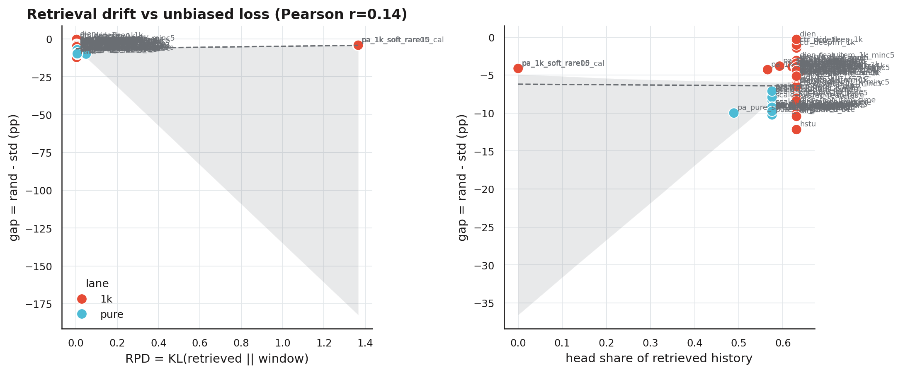
方法：PA-GSU 与 Bias-Gate
三个互不冲突的干预层：配额改「选谁」，门控改「怎么融」，元特征改「CTR 头看见什么」。
PA-GSU quota：限制 top-\(k\) 中来自头部桶的条数上限，余额按原相关度从更冷桶补齐：
$$ \big|\{i\in\mathcal{H}_{ret}: b(i)\in\mathrm{Head}\}\big|\le\lceil q\cdot k\rceil,\qquad q\in\{0.3,0.5,0.7,1.0\} $$
硬检索路径下配额在每个语义优先级层内生效，不破坏 both > tag > author 的顺序。
PA-GSU rarity：软路径上给稀有度加分（注意是稀有度，不是流行度），\(z(\cdot)\) 为窗口内标准化以消除量纲差：
$$ s'(i)=\mathrm{rel}(i,t)+\lambda\cdot z\big(\log(1/\hat p_i)\big),\qquad z(u)=\frac{u-\mu_{\mathcal{H}}}{\sigma_{\mathcal{H}}+\varepsilon} $$
Bias-Gate：把目标流行度桶 embedding 与 17 维检索元特征拼成门控输入，分别缩放两路兴趣：
$$ \begin{aligned} pop\_meta &= \big[\mathrm{Emb}(b_t)\,\|\,\mathrm{meta\_vec}_{17}\big] \\ [g_{ret},g_{rec}] &= \sigma\big(\mathrm{MLP}(pop\_meta)\big) \\ \widetilde{interest}_{ret} &= g_{ret}\cdot interest_{ret},\qquad \widetilde{interest}_{rec}=g_{rec}\cdot interest_{rec} \end{aligned} $$
gate bias 初始化到 ≈3 使 \(\sigma\approx 0.95\)，近恒等启动保证向后兼容。元特征含检索/语义命中比、检索与窗口的 log 流行度及其 drift、分数熵与 10 桶直方图。
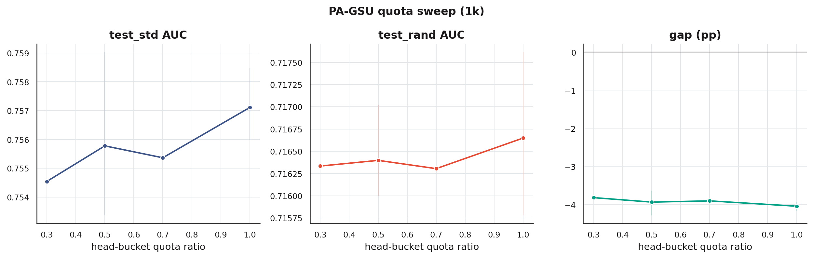
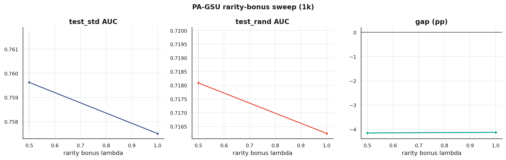
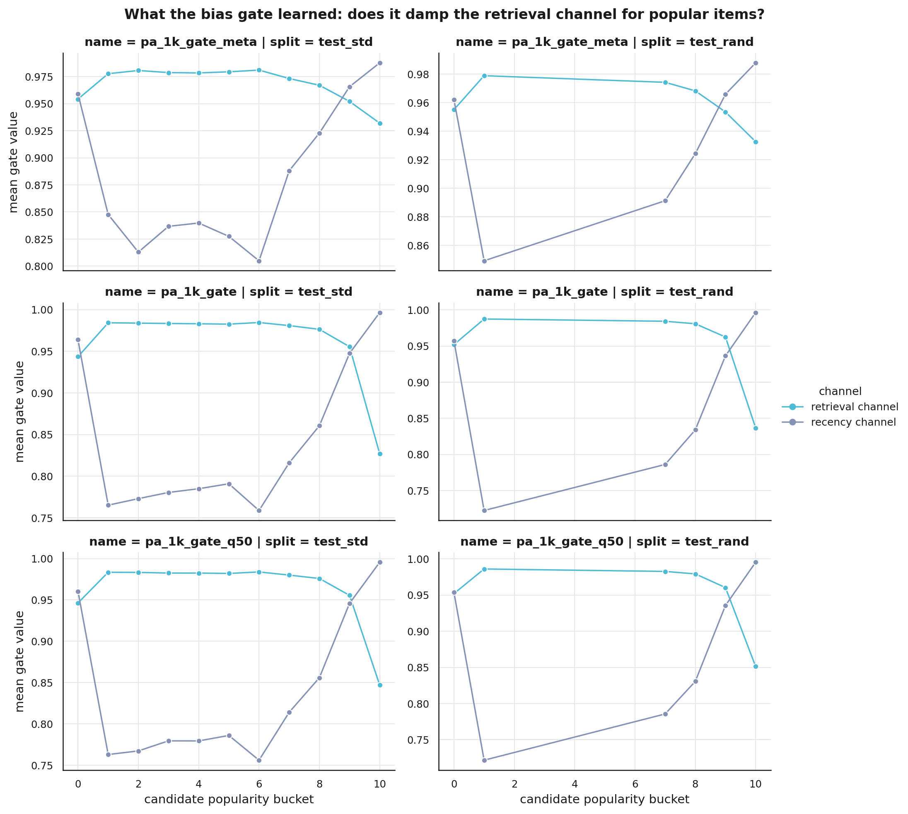
三、多任务时长：CTR + 观看时长 MTL
工业推荐不止优化「点不点」，还要优化「看多久」。本线在 KuaiRand 上做双任务：CTR（is_click）+ 观看时长（play_time_ms）。结构扫 Shared / MMoE / PLE；时长损失扫 WLL / WLL-Norm / CREAD / Distill / Distill-EMD 等；TimeTrans 分位桶仅在 train 拟合。注意：旧实验「click + long_view 双头」只作过 gap 对照且未改善无偏——与本线的工业 watch-time MTL 不是同一条实验。
总损失用 Kendall Uncertainty Weighting 自适应平衡两任务。记 CTR 损失 \(\mathcal{L}_c\)、时长损失 \(\mathcal{L}_w\)，可学习噪声参数 \(s_c,s_w\)：
$$ \mathcal{L}_{\mathrm{MTL}}=e^{-s_c}\mathcal{L}_c+s_c+e^{-s_w}\mathcal{L}_w+s_w $$
CTR 侧仍用 BCE + label smoothing（\(\varepsilon\approx 0.003\)）。时长侧三种关键目标如下。
① WLL-Norm（偏秒数点估计） 单 logit \(z\)；用 TimeTrans 把播放时长归一化到 \(\hat t\in[0,1]\)，令 \(p=\tfrac12\sigma(z)\)：
$$ \mathcal{L}_{\mathrm{WLL\text{-}Norm}}=-\hat t\log p-\log(1-p),\qquad \hat t=\mathrm{TimeTrans.encode}(play\_time) $$
还原秒数时再 \(\mathrm{TimeTrans.decode}(\cdot)\)。1K 上 MMoE+WLL-Norm 将 MAE 压到 5.41s。
② CREAD（偏生存 / 时长排序） 把时长轴切成 \(m\) 个阈值桶阈值 \(\{t_i\}_{i=1}^{m}\)（仅 train 拟合）。每个桶一个 sigmoid 头，标签为「是否活过该阈值」：
$$ y_i=\mathbf{1}(y>t_i),\qquad \hat p_i=\sigma(z_i),\qquad \mathcal{L}_{\mathrm{surv}}=-\sum_{i=1}^{m}\big[y_i\log\hat p_i+(1-y_i)\log(1-\hat p_i)\big] $$
再加还原秒数的 Huber 与相邻桶单调惩罚：
$$ \begin{aligned} \hat y_{\mathrm{sec}}&=\sum_{i=1}^{m}\hat p_i\cdot\Delta t_i \\ \mathcal{L}_{\mathrm{CREAD}} &=\mathcal{L}_{\mathrm{surv}}+\lambda_h\,\mathrm{Huber}(\hat y_{\mathrm{sec}},y_{\mathrm{sec}})+\lambda_m\sum_{i}[\hat p_{i+1}-\hat p_i]_+ \end{aligned} $$
Shared+CREAD 在 1K 上同时拿到全局 AUC 0.7148 与时长 XAUC 0.6242——综合首选。
③ Distill-EMD（偏分布匹配） \(m\) 维 softmax 输出离散分布 \(\hat{\mathbf{p}}\)；用 Laplace 核把真实时长做成软标签 \(\mathbf{q}\)，再对 CDF 做平方 EMD：
$$ \begin{aligned} \mathcal{L}_{\mathrm{CE}}&=-\sum_{i=1}^{m}q_i\log\hat p_i \\ F_i&=\sum_{j\le i}\hat p_j,\quad G_i=\sum_{j\le i}q_j \\ \mathcal{L}_{\mathrm{EMD}}&=\sum_{i=1}^{m}(F_i-G_i)^2 \\ \mathcal{L}_{\mathrm{Distill\text{-}EMD}}&=\mathcal{L}_{\mathrm{CE}}+\lambda_e\mathcal{L}_{\mathrm{EMD}} \end{aligned} $$
MMoE+Distill-EMD 取得最高 GAUC_w 0.6045，但 MAE ≈23s——分布匹配抬了个性化 CTR 排序，秒数点估计却糊掉。
评测尺子（均在 test_rand 上报告）：
$$ \begin{aligned} \mathrm{GAUC}_w&=\sum_u w_u\,\mathrm{AUC}_u,\quad w_u\propto n_u \\ \mathrm{XAUC}&=\Pr\!\big(\hat y_i>\hat y_j\mid y_i>y_j\big) \\ \mathrm{MAE}&=\mathbb{E}\big[|\hat y_{\mathrm{sec}}-y_{\mathrm{sec}}|\big] \end{aligned} $$
其中 GAUC_w 是按用户平均的点击排序（个性化 CTR）；XAUC 是时长 pairwise 排序一致性；MAE 是秒数绝对误差。「利于 CTR 排序」= AUC/GAUC 高，≠ 线上点击率最高。
| 目标（test_rand） | 1K 冠军 | 关键数字 |
|---|---|---|
| 个性化 CTR（GAUC_w） | MMoE + Distill-EMD | 0.6045 |
| 全局 CTR（AUC） | Shared + CREAD | 0.7148 |
| 时长排序（XAUC） | Shared + CREAD | 0.6242 |
| 时长误差（MAE） | MMoE + WLL-Norm | 5.41 s |
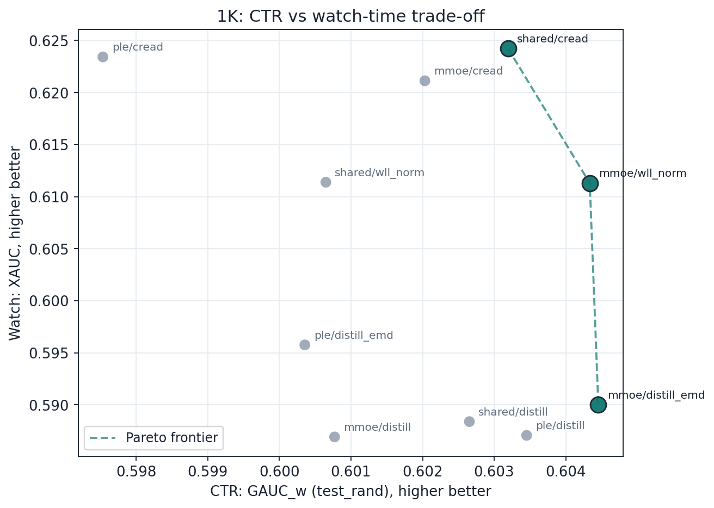
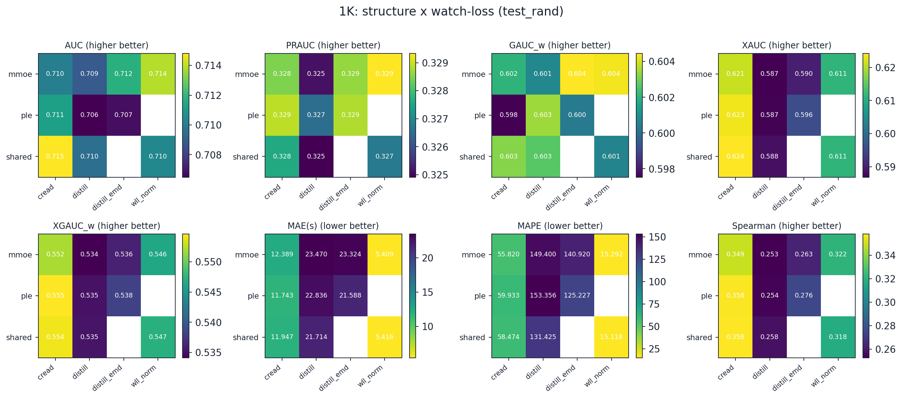
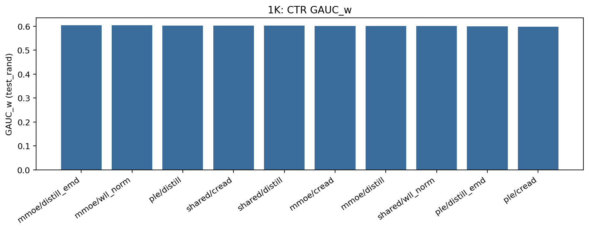
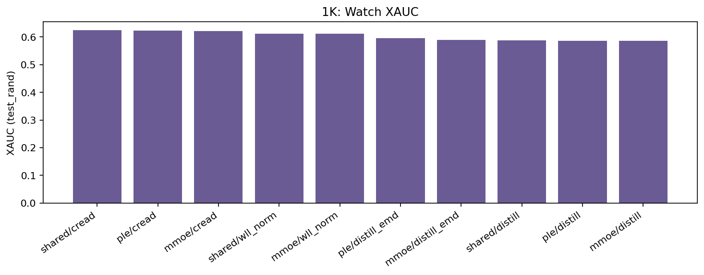
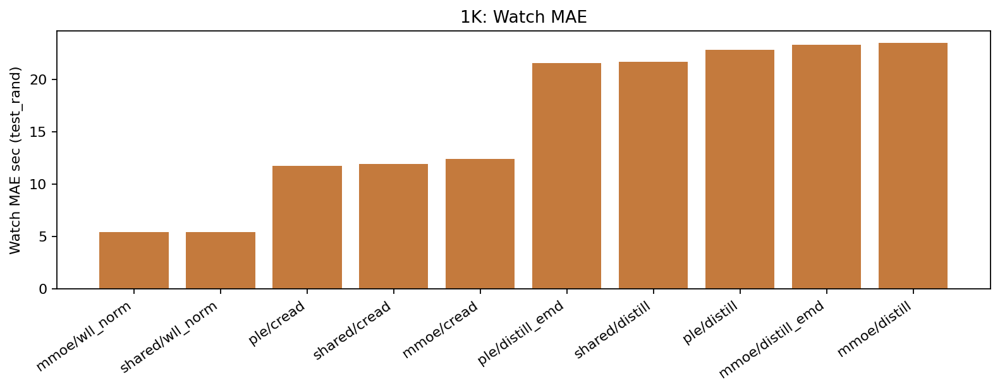
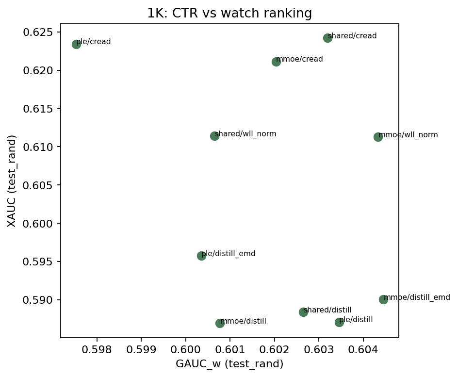
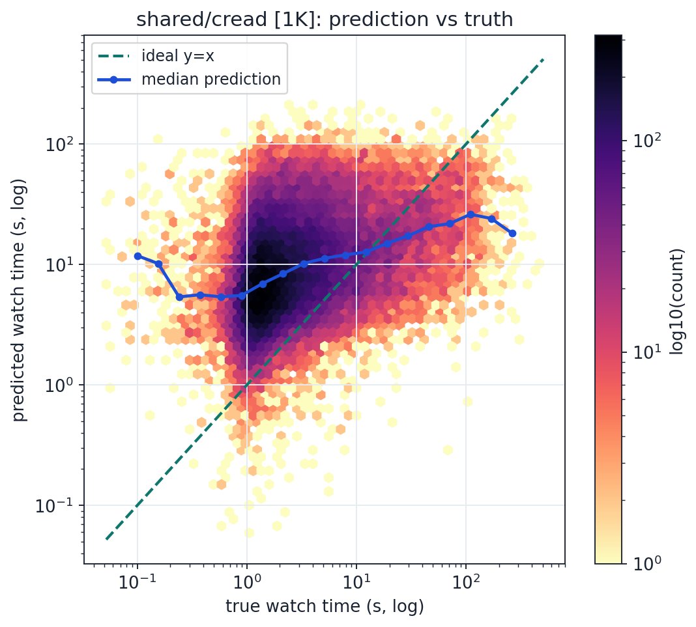
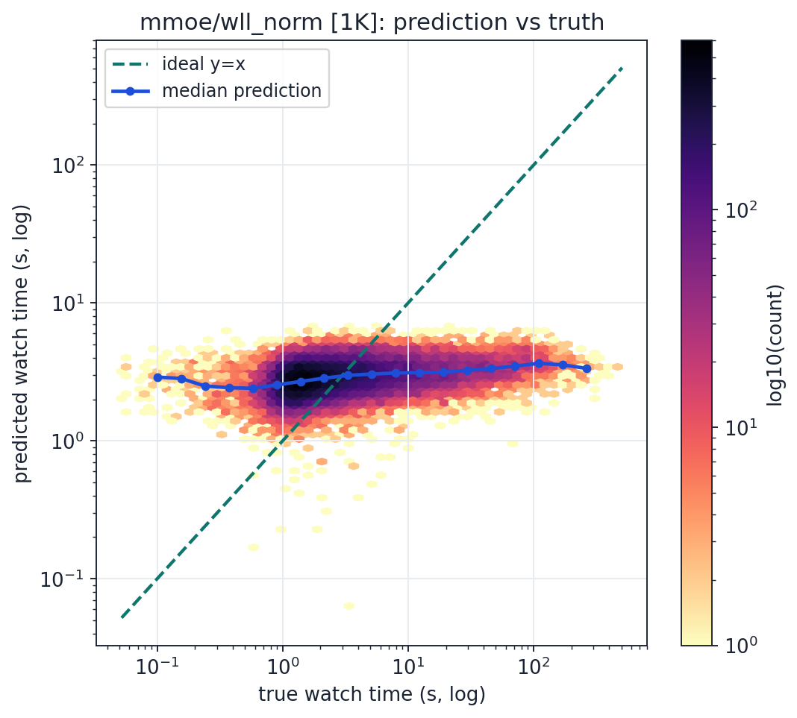
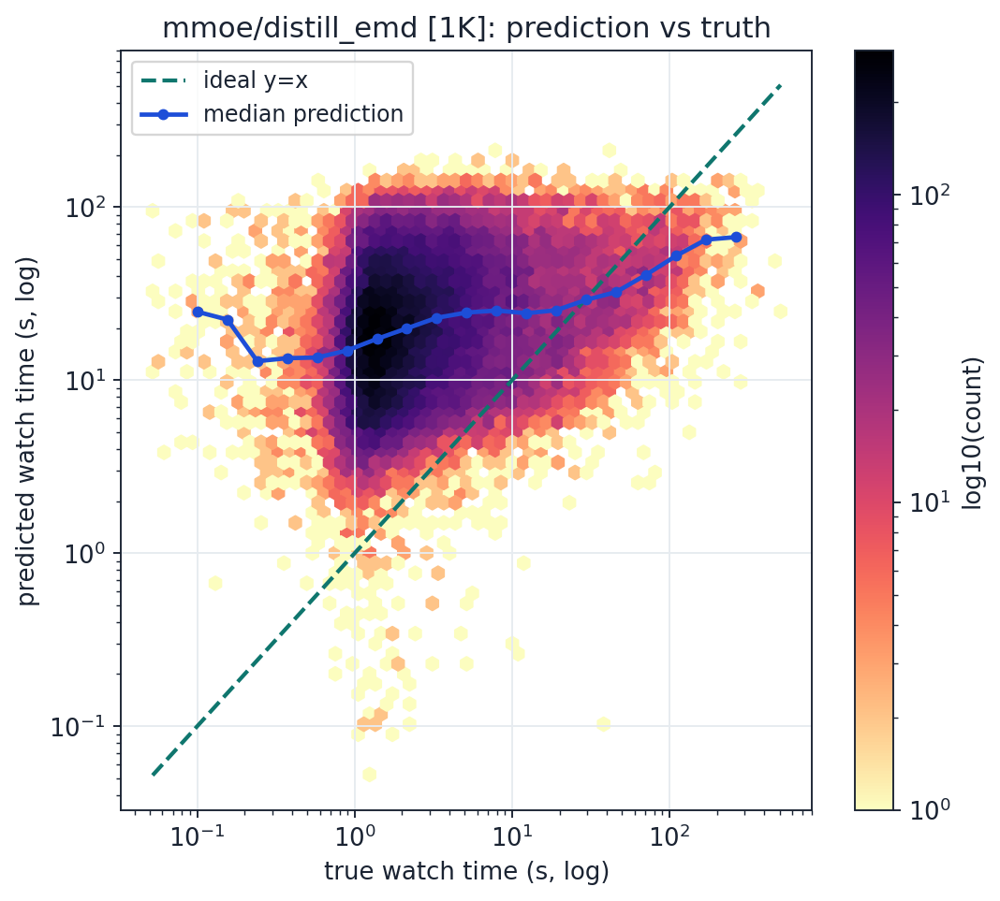
方法层结论：工业时长目标怎么选，往往比再换一个 MTL 结构更关键。Pure 上 PLE+CREAD 赢，迁 1K 后 Shared/MMoE 更合适——结构冠军不可直接迁移。
项目结果｜三条线各有锚点，负结果同样成立
长序列侧：1K 双通道取得 rand 0.721 / gap −0.034（3 epoch），较 SIM +2.9%、较 DIN +4.8%；OneTrans-L 标出 std 0.769 的能力上限。
去偏侧：通宵同协议下 gate_q50 取得最佳 |gap| −0.036，较强骨干上损失层 IPS（|gap| 0.041）约降 12%；并区分提分件与对齐件。
多任务侧：Shared+CREAD 综合最稳（AUC 0.715 / XAUC 0.624）；MMoE+WLL-Norm 将 MAE 压到 5.4s；Distill-EMD 取得最高 GAUC_w 0.605 但 MAE 约 23s——无单一全能冠军。
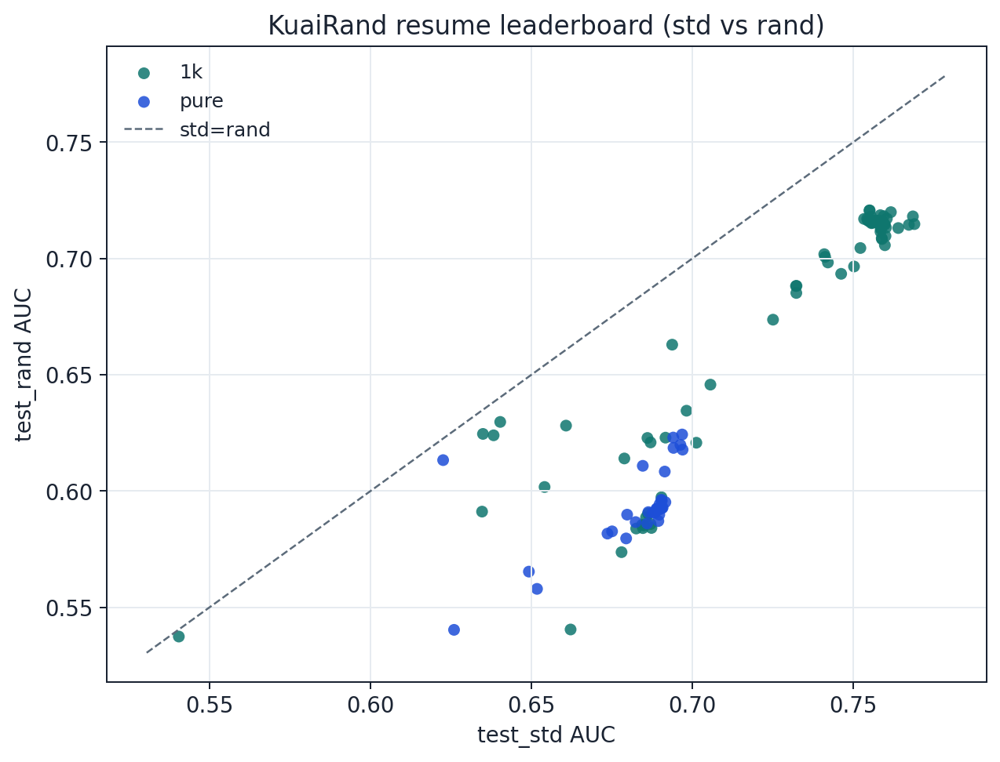
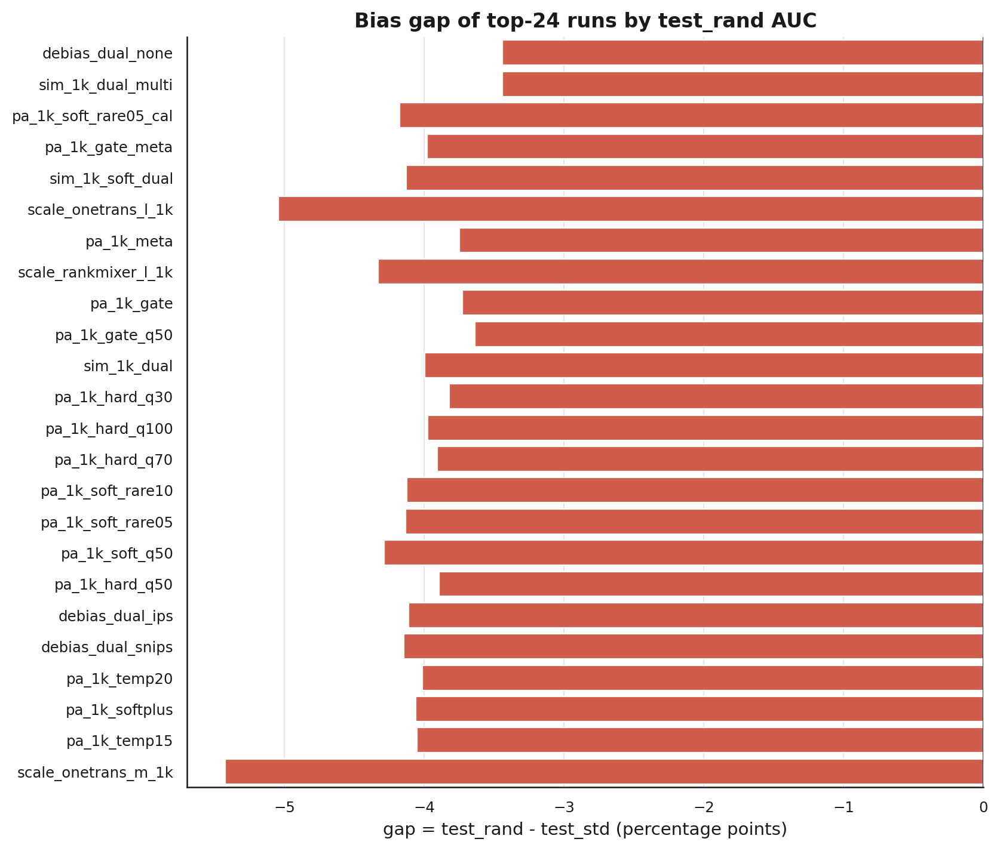
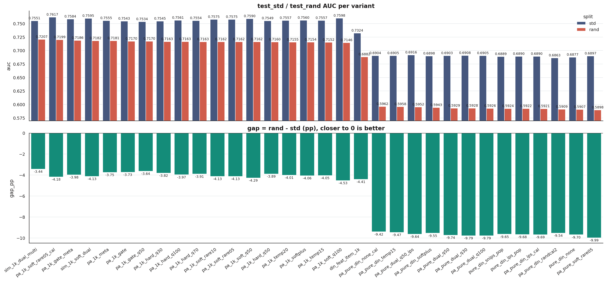
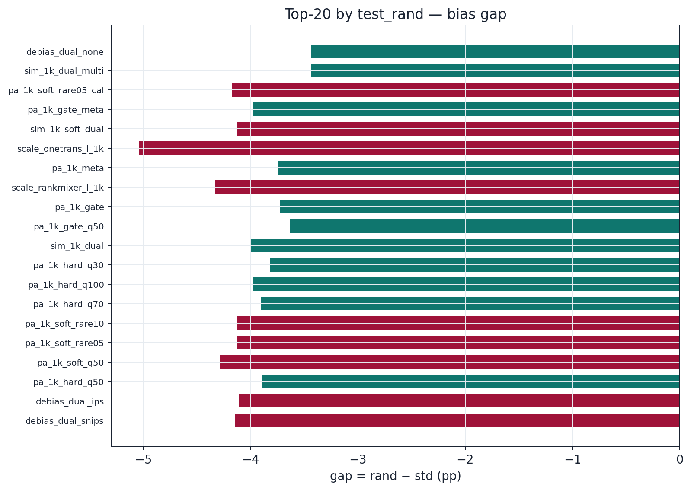
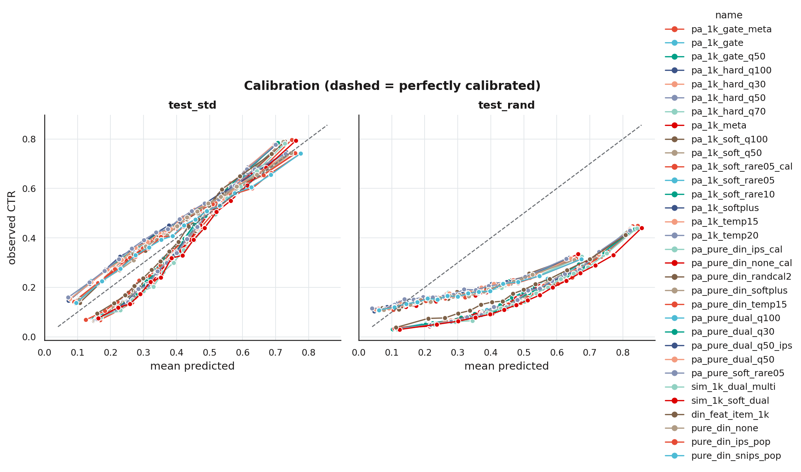
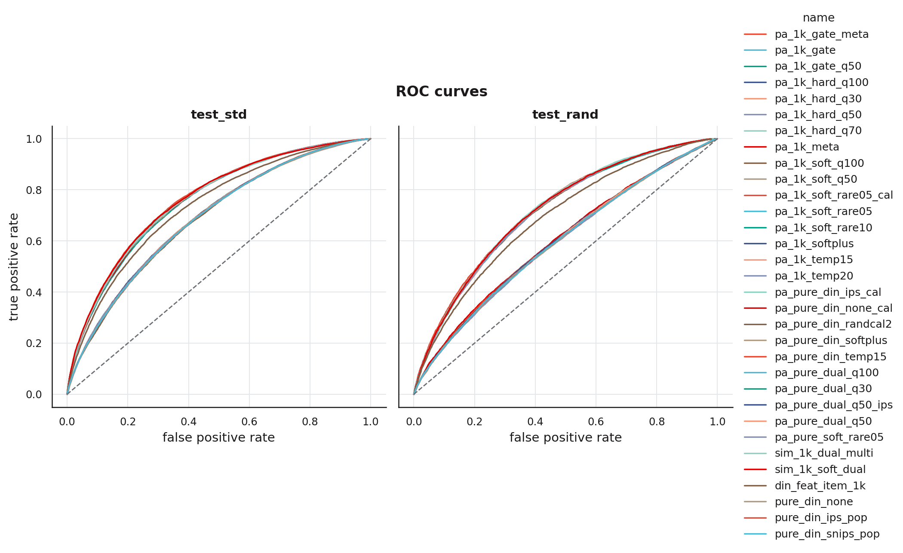
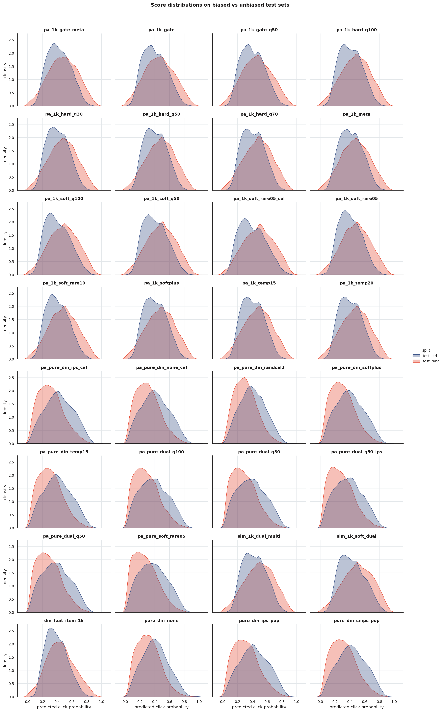
沉淀下来的负结果
- DIEN 弱于 DIN → 本数据跳过兴趣演化线。
- Pure 上 IPS / SNIPS / RandCal 几乎拉不开；强双通道骨干上加 IPS 反而略伤。
- 旧 MTL（click + long_view）未改善无偏泛化；与新的 play_time MTL 勿混谈。
- Soft 检索与 OneTrans 抬 std、伤 gap；scaling 不能替代去偏。
- soft rare 在 1K 上 RPD 爆炸——把分布拧过头并不等于 gap 变好。
gate_metaAUC 最强但 gap 不收。- Pure 上 PA-GSU 也弱：短序列、semantic 命中低，检索层可干预空间小。
- Distill / Distill-EMD 抬 GAUC、伤 MAE——分布匹配 ≠ 秒数准。
- PLE 在 Pure 上赢，迁 1K 后未继续赢——结构冠军不可直接迁移。
诚实边界：公开数据离线实验，无线上 A/B；Pure 与 1K 绝对值不横比；通宵 1-epoch 冠军 gate_q50（−0.036）未超过 3-epoch 双通道锚点（−0.034），只在同队列内成立；MTL 无单一全能，「利于 CTR 排序」≠ 线上点击率最高；全因子交叉未跑完，属 future work。